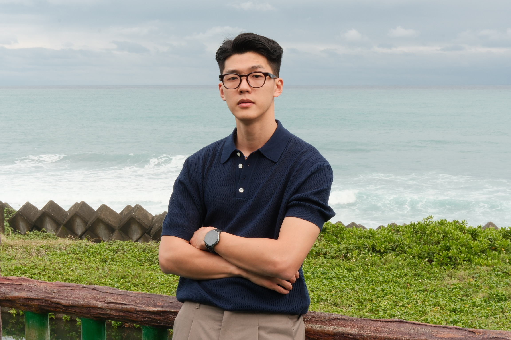
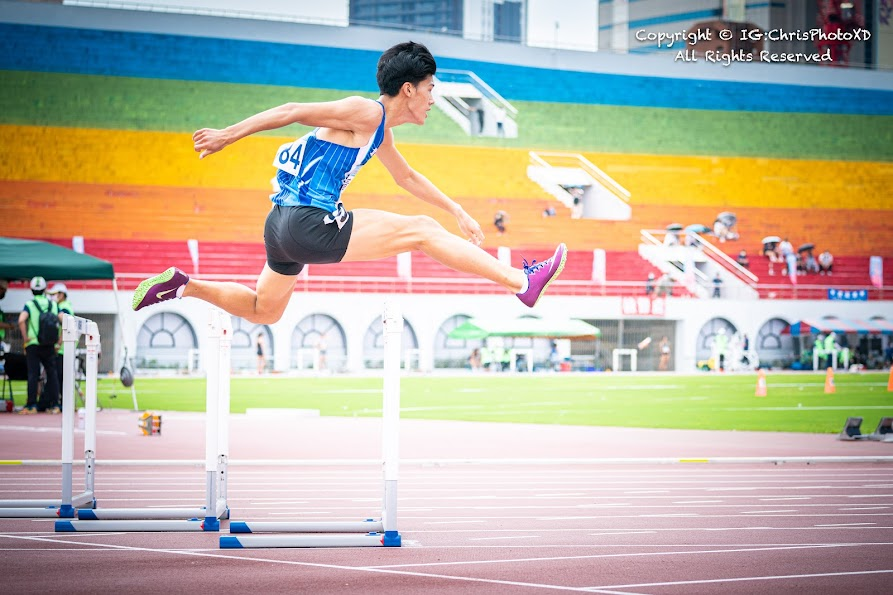
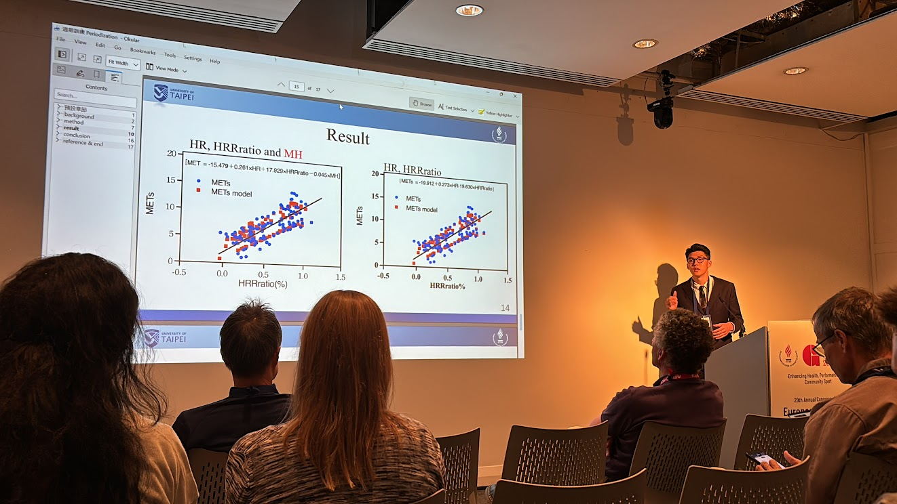
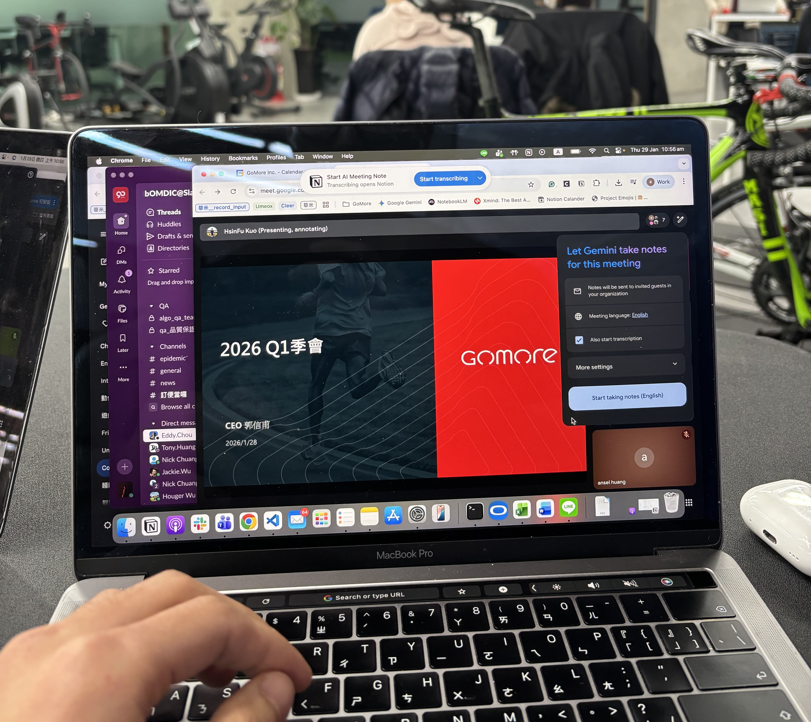
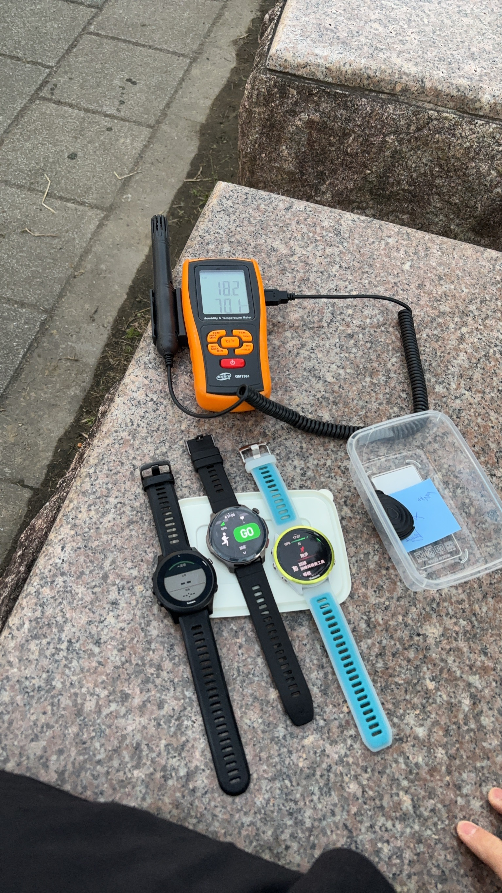
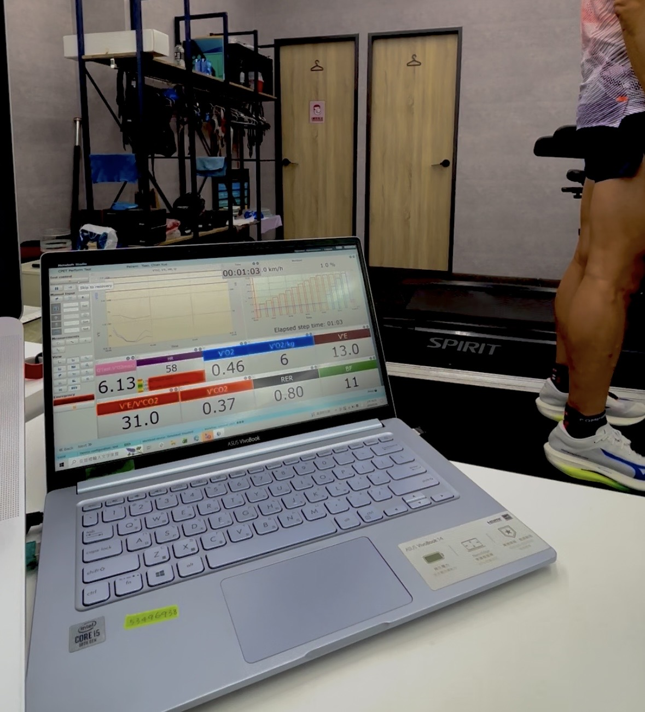

陸上系經驗分享 · 主軸：主動思考
找自己的麻煩，
麻煩才不會來找你
從田徑場上的風吹日曬，到科技業演算法與運動測試數據——分享大學、研究所與初入職場的轉折。在 AI 很方便的時代，為什麼仍要守住「自己到底需要什麼」的思考？

黃暉銘
- 學歷：北市大陸上運動學系；運動健康科學系（雙主修）。進修運動健康科學所並順利畢業。
- 專項背景：田徑（跨欄），大學期間認真訓練；成績卻停滯不前，因而盤點資源、選擇升學。
- 現職：GoMore 博晶醫電（科技業醫電）— 演算法設計、運動測試數據採集。
今天依序談大學、研究所、職場；全程主軸圍繞「主動思考」。歡迎隨時舉手互動——我不是什麼偉大演講者，只是一個回來分享的學長。
01 大學：運動員的必修課
多數人進校都抱著「我要最強」。我也是：不只完成課表，還揪晨練；缺敏捷就練繩梯、缺體能就跑 K、缺爆發就踢彈力帶。常駐田徑隊中最晚離開的那群，因為除了既定課表，還會加練一些天馬行空的想法。
但事事未必如意——大一到大三很認真，成績卻幾乎沒進步。四年級開始想：出社會還是升學？盤點後發現運健雙主修和對欄架技術分析的熱情是優勢；大四上以田徑相關研究參加甄試（與運健僅擦邊），仍以正取二進碩班。
不是要放棄專項。 把專訓當人生的必修課，認真修完；主動利用時間，靜下來想想未來。成績停滯不代表這四年白費。
「運動員最大的收穫，往往不是獎牌，而是在嚴苛環境下，仍持續把自己推向極限——那股韌性。」
韌性累積 vs. 成績表現 (心理模型)
※ 個人經驗模擬：表面成績可能平台化，韌性仍持續累積。

02 研究所：環境比頭銜重要
「研究生」未必有優越感——常只是晚兩年出社會。帶給我價值的是高知識密度的環境：向學識淵博的前輩「偷」知識，為畢業也被迫進步。
讀碩代價：同儕已工作、薪水與焦慮感。讀碩好處：視野、底蘊、耐性——Results take time, and time requires patience.

🎤 出國 Oral presentation（Glasgow）
國際學分需 Oral presentation，與兩位同學、老師赴英國報告：15 分鐘全英文、現場 Chairman、開放自由入場。背稿練了幾十遍，正式上場卻把 “but” 講成「但是」——蠢，但會記一輩子。
視野拓展
觸及原本知識範圍外，理解事情如何運作。
底蘊累積
向教授與前輩汲取長年專業累積。
耐性培養
在「原地踏步」感中仍往前走。
💡 核心金句
「即使不如預期，僅需細品過程，收穫仍不同凡響。」
主動思考工作坊
10 分鐘的白紙練習：目標、優勢、缺口。沒有標準答案，重點是你有沒有想過。
Time to think!
時間到！可以開始分享或進入下一步
不限學校，可以是任何你渴望的事。
列出你的現有資源、天賦或過往累積。
誠實面對你的技術缺口、心態瓶頸。
你的思考藍圖
答案漂不漂亮沒關係；剛才這段「主動思考」的過程，才是重點。
碩班畢業前自評：運動科學強、工程面弱 → 選需兩者交集的職位
03 職場：主動爭取
大學→碩班： 具雙主修、跨欄技術分析身份及能力；缺運健系統知識與學術表達。
碩班→職場： 想當工程師；有運動分析與生理訊號能力；缺程式語言能力 → 進博晶醫電（約半年）。
職場不像學校：乖不一定有對等回饋。初期工作量不多，才發現自己太習慣等吩咐（教練課表、教授任務）。有人說：主管不派工，就自己找事做——沒爭取，就什麼都沒有。


